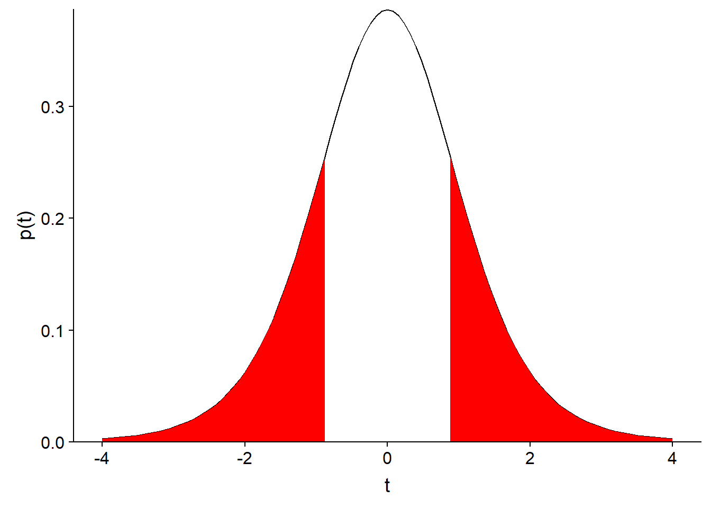
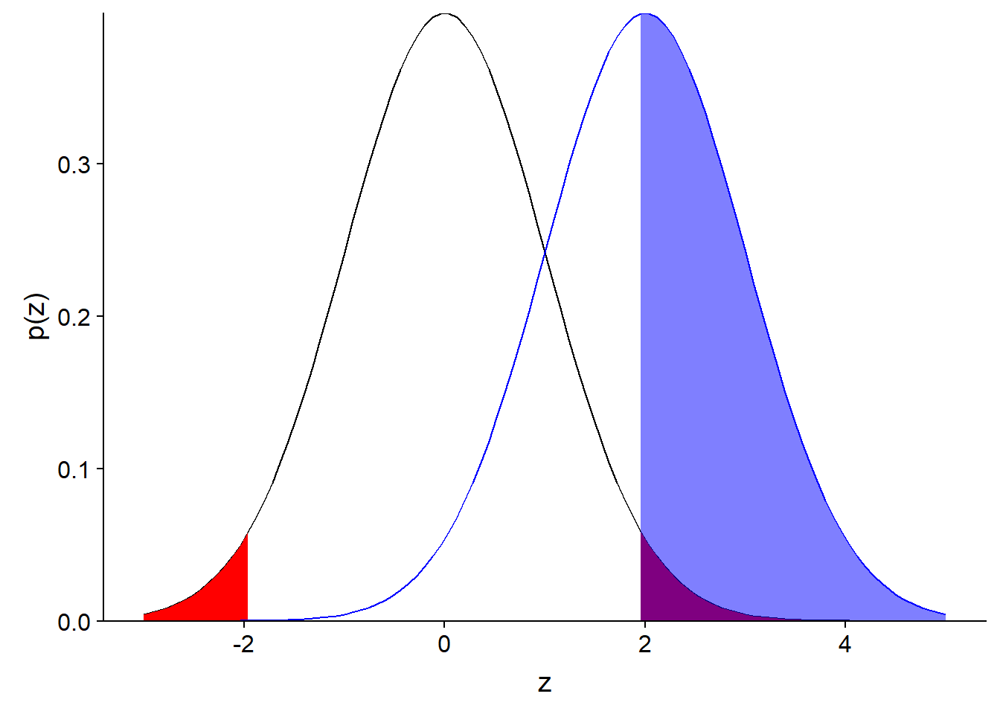
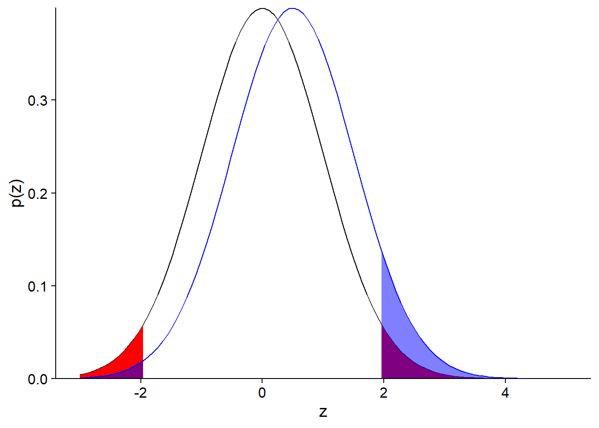
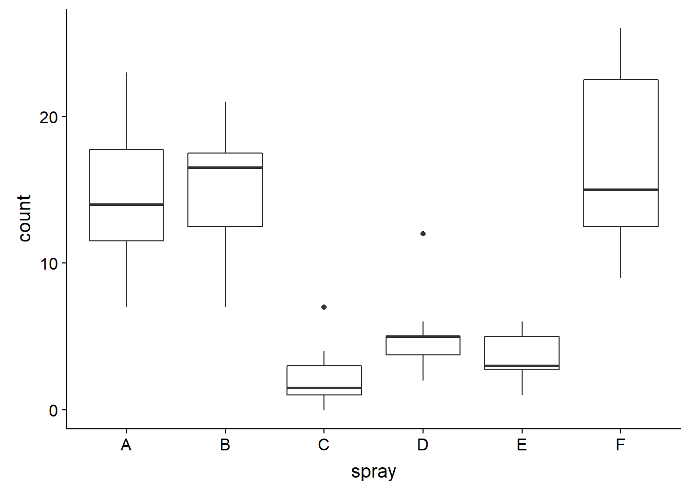
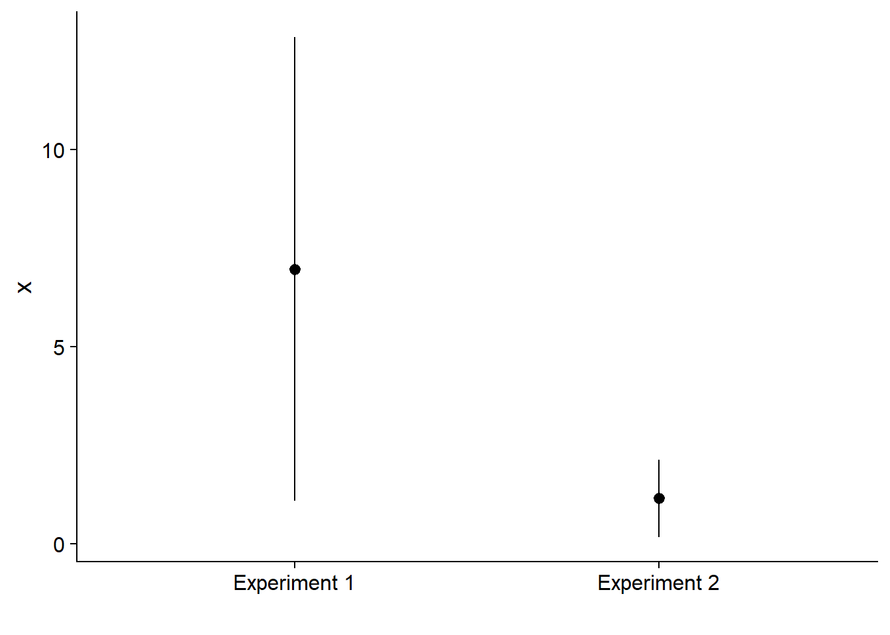
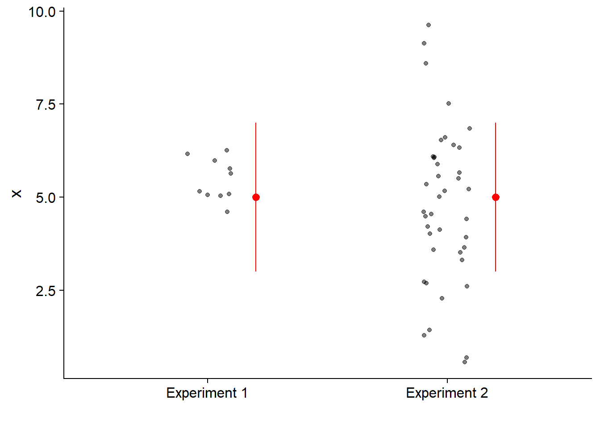

Hypothesis testing
September 16, 2019
Objectives
- Describe the general operation of a statistical hypothesis test.
- Define concepts related to the accuracy of a test: significance threshold, power, type I and II errors.
- Use the \(t\)-test to compare the means of two independent or paired samples.
Comparing a sample mean to a reference value
In this example, we want to verify the absence of bias of a soil moisture sensor, by measuring the relative humidity of the soil at 9 points in a 1-m\(^2\) plot. With a more accurate sensor, we have determined that the mean humidity in this plot is 50%. Here are the 9 values obtained with the device to be tested, their mean and the standard error of that mean.
humidite <- c(47, 50, 48, 50, 54, 49, 56, 52, 51)
humid_moy <- mean(humidite)
humid_et <- sd(humidite) / sqrt(length(humidite))
paste("Mean of", round(humid_moy, 2), "and standard error of", round(humid_et, 2))## [1] "Mean of 50.78 and standard error of 0.95"Suppose these measures follow a normal distribution. If the sensor were not biased (\(\mu\) = 50), what would be the probability that the sample mean \(\bar{x}\) would be this far from the reference value?
During the class on confidence intervals, we saw that the difference between \(\bar{x}\) and \(\mu\), divided by the standard error, follows a \(t\) distribution with \(n - 1\) degrees of freedom:
\[ t_{n-1} = \frac{\bar{x} - \mu}{s / \sqrt{n}} \]
Recall that the \(t\) distribution replaces the standard normal distribution when the standard deviation \(s\) is estimated from the sample.
The \(t\) statistic for this sample, if \(\mu\) = 50, is equal to:
humid_t <- (humid_moy - 50) / humid_et
humid_t## [1] 0.8151115The cumulative \(t\) distribution (pt function in R) gives us the probability of observing a value smaller or equal to a given value. In this case, the probability of obtaining a value of the \(t\) statistic greater than the one observed for our sample, if \(\mu\) = 50, is calculated as:
1 - pt(humid_t, df = 8)## [1] 0.2192996This probability (21.9%) matches the filled fraction of the area under the curve in the graph below:

Since our question was: “What is the probability of the sample mean being that far from the reference value?”, we must also consider the probability of obtaining a negative difference greater than the observed positive difference, i.e. a value of the \(t\) statistic less than -0.815. Since the \(t\) distribution is symmetrical, this probability is also 21.9%, so the probability of the mean being that far from the reference point is 43.8%, as shown in the graph below.

Thus, the difference observed between the sample mean and the expected value (\(\mu\) = 50) is very likely given the variance of the measurements. In the context of hypothesis testing, the probability of obtaining a more extreme result than the one observed is called the p-value. In this case, the p-value associated with the hypothesis \(\mu\) = 50 is 0.438.
In the next sections, we will see more formally the elements of a statistical hypothesis test.
Statistical hypothesis tests
Generally, a statistical hypothesis test aims to determine whether the variation observed in a sample of data is consistent with a “default” model (the null hypothesis), or whether observations are so improbable under this null hypothesis that it must be rejected in favor of an alternative hypothesis.
Null hypothesis and alternative hypothesis
The null hypothesis takes its name from the fact that it often corresponds to a lack of effect: no difference between two treatments, no correlation between two variables, etc.
In our previous example, the null hypothesis (\(H_0\)) corresponded to the absence of bias of the sensor (\(\mu = 50\)). The alternative hypothesis (\(H_a\)) is the logical negation of the null hypothesis, so \(\mu \neq 50\).
Exercise
What is the null hypothesis corresponding to each of the following alternative hypotheses?
The density of fir seedlings varies according to the slope in a plot.
This new insecticide is more effective than the existing treatment for emerald ash borer.
One-sided or two-sided test
The second example in the exercise is a one-sided test. If \(\mu_T\) is the effect of the new product and \(\mu_R\) that of the reference product, then the null hypothesis is \(\mu_T \leq \mu_R\) and the alternative hypothesis is \(\mu_T > \mu_R\).
In our first example, we wanted to test the presence of a positive or negative bias in the measurements of the soil moisture sensor. This is a two-sided test, where the alternative hypothesis \(\mu \neq 50\) is equivalent to the union of two one-sided hypotheses (\(\mu < 50\) or \(\mu > 50\)).
The choice of a one-sided or two-sided test must be made in advance and depends on the question of interest.
Exercise
What would be an example of a null hypothesis and alternative hypothesis in your field of research?
Scientific hypothesis and statistical hypothesis
In the context of the evaluation of experimental treatments (in medicine, agronomy or forestry, etc.), the null hypothesis generally corresponds to the absence of an effect of the studied treatment compared to a reference treatment or control group. In this case, the alternative hypothesis corresponds to the scientific hypothesis which really interests the researchers. It is hypothesized that the treatment has an effect, so we check if this effect can be detected (that is, if the null hypothesis is rejected by the experiment).
In other contexts, the null hypothesis is based on the predictions of a model that one wishes to test. For example, do the rainy days observed in a year correspond to the precipitation probabilities predicted by the meteorological models? In this case, rejection of the null hypothesis means that the observations are incompatible with the model and the model needs to be improved.
Elements of a hypothesis test
From a given null hypothesis, the construction of a statistical test requires three main elements:
- a statistic that measures the deviation of observations from the null hypothesis;
- the distribution of that statistic under the null hypothesis; and
- a significance threshold.
In the example we saw at the beginning of this class, we calculated the \(t\) statistic for which we know the theoretical distribution, which allowed us to determine a \(p\) value, which is the probability of getting a deviation as large or greater than the one observed, if the null hypothesis was true.
The significance threshold (\(\alpha\)) is a probability that is considered small enough to reject the null hypothesis if \(p \leq \alpha\). For historical reasons, the threshold most often used in is \(\alpha = 0.05\). This corresponds to a 5% probability of erroneous rejection of the null hypothesis.
The \(\alpha\) threshold must be chosen before data analysis.
One-sided or two-sided test
For a two-sided test, we reject a fraction \(\alpha / 2\) from each end of the distribution (as for a confidence interval). For a one-sided test, we reject a fraction \(\alpha\) from one end of the distribution. Here is an illustration of the two cases with \(\alpha = 0.05\).

Types of errors and power of a test
Type I and Type II errors
Here are the four possible scenarios depending if \(H_0\) is true or false and if we reject it or not:
| \(H_0\) is not rejected | \(H_0\) is rejected | |
|---|---|---|
| \(H_0\) is true | correct decision | type I error |
| \(H_0\) is false | type II error | correct decision |
Note: The truth of \(H_0\) for a null hypothesis of the type \(\mu = 0\) is somewhat of an abstraction. In practice, the difference between two treatments can be very small, but will never be perfectly zero. Nevertheless, one can conceive a null hypothesis that is true up to a certain precision.
A type I error occurs when \(H_0\) is rejected even though it is true. The significance threshold \(\alpha\) is the probability of this type of error if \(H_0\) is true.
A type II error occurs when \(H_0\) is not rejected even if it is false. The probability of this type of error is denoted by \(\beta\). More often, we are interested in (\(1 - \beta\)), the probability of rejecting \(H_0\) when it is false (of detecting a significant difference when there is one). This probability is called the power of the test.
Question
In our example from the beginning of the class, could we calculate the power of the test, i.e. the probability of detecting a bias in the sensor with the sample of 9 measurements? Which additional information do we need?
Power of a test
Unlike the significance threshold \(\alpha\) that is chosen by the analyst, the power of a test depends (among other things) on the actual value of the effect. In our example, for a fixed \(\alpha\) and a specific experiment design, it is easier to detect a large bias than a smaller bias.
Calculating the power of a \(t\)-test is a fairly complex problem; in R, you can use the pwr package functions to perform this calculation.
Here, we will simplify the calculation by assuming that the test statistic follows a normal distribution (which is approximately correct when the sample size \(n\) is high).
For example, let’s calculate the power of the test using the soil moisture data (null hypothesis: \(\mu = 50\)), if the true bias is 2, the standard error is 1 and \(\alpha = 0.05\). In this case, the true bias corresponds to a standard normal value of \(z = 2\), or 2 standard errors above the null hypothesis mean.
Since \(\alpha = 0.05\) and our test is two-sided, the null hypothesis will be rejected for values of \(z\) corresponding to a cumulative probability < 0.025 and > 0.975.

For now, let’s focus on the upper limit. The critical value of \(z\) beyond which we would reject the null hypothesis can be found with qnorm.
qnorm(0.975)## [1] 1.959964Due to the bias, the sample mean will follow a normal distribution with the same standard deviation, but centered on \(z = 2\). This distribution is shown in blue in the graph below.

The filled blue section corresponds to the probability that the null hypothesis will be rejected, if the real mean is 2 standard errors above the reference value. This probability, the power of the test, is about 50%. The exact value can be calculated as follows: 1 - (Probability that the obtained mean is smaller than the critical value of \(z\) according to the null hypothesis).
1 - pnorm(qnorm(0.975), mean = 2)## [1] 0.5159678Question
For the same \(\alpha\), is the power of a one-sided test (alternative hypothesis: \(\mu > 50\)) smaller, equal or greater than that of a two-sided test?
If we perform the test illustrated in the graph and we obtain a significant result (rejection of the null hypothesis), would the measured bias be a good estimate of the actual bias of the device? Why?
If we consider only the filled blue section of the graph above, the mean of \(z\) is 2.77. Therefore, in cases where a significant effect is detected, this effect is overestimated.
Here is a more extreme case, when the true bias is at \(z = 0.5\) (the actual effect is 1/2 the standard error).

In this case, we have:
- a 92% probability of not detecting any effect;
- a 7% probability of detecting an effect, but it will be strongly over-estimated;
- a 1% probability of detecting an effect of the wrong sign.
Gelman and Carlin (2014) describe the latter two cases as type M (error on the magnitude of the effect) and type S (error on the sign) errors.
Gelman, A. and Carlin, J. (2014) Beyond power calculations: Assessing type S (sign) and type M (magnitude) errors.
Increasing the power of a test
A higher \(\alpha\) decreases the number of Type II errors (better power), but increases the number of Type I (and Type S) errors.
The only way to reduce all these types of errors is to increase the sample size. The appropriate sample size depends both on the magnitude of the effect being measured and the variability of the data.
It is incorrect to calculate the power after the test based on the measured effect. As we have seen, this effect can be strongly overestimated if the real power is low.
Applications of the t-test
Comparing the sample mean to a reference value
The first application of the \(t\)-test consists in comparing the mean of a sample to a fixed value (for example, a theoretical prediction or a very precise reference value).
Let’s repeat our first example, a comparison of a sample of 9 humidity values to a reference mean of 50, this time using the t.test function in R.
humidite <- c(47, 50, 48, 50, 54, 49, 56, 52, 51)
t.test(humidite, mu = 50)##
## One Sample t-test
##
## data: humidite
## t = 0.81511, df = 8, p-value = 0.4386
## alternative hypothesis: true mean is not equal to 50
## 95 percent confidence interval:
## 48.57739 52.97816
## sample estimates:
## mean of x
## 50.77778Question
What does each element of this result of the
t.testfunction mean?What is the relationship between a confidence interval and a hypothesis test? What does the 95% confidence interval of \(\bar{x}\) tell us about the test result of the null hypothesis \(\mu = 50\) with a threshold \(\alpha = 0.05\)?
Comparing the means of two independent samples
The InsectSprays data frame included with R contains the data from an experiment of Geoffrey Beall (1942) on the number of insects (count) on plots treated with different products (spray), with 12 independent measurements by product type.
ggplot(InsectSprays, aes(x = spray, y = count)) +
geom_boxplot()
Let’s consider a subset of the data consisting of plots treated with products A and B, and test the null hypothesis that the two products have the same efficiency: \(\mu_A = \mu_B\), or equivalently, \(\mu_A - \mu_B = 0\).
For two independent samples, each with a normal distribution, the difference of the means \(\bar{x}_A - \bar{x}_B\) divided by its standard error also follows a \(t\) distribution:
\[t = \frac{\bar{x}_A - \bar{x}_B}{\sigma_{\bar{x}_A - \bar{x}_B}}\] We still need to determine the standard error of the difference between the two means and the number of degrees of freedom of this \(t\) distribution.
The variance of a difference between two independent random variables is equal to the sum of the variances of the variables taken separately. Thus, the standard error of the difference can be related to the variance and size of each of the two samples.
\[\sigma_{\bar{x}_A - \bar{x}_B}^2 = \sigma_{\bar{x}_A}^2 + \sigma_{\bar{x}_B}^2\] \[\sigma_{\bar{x}_A - \bar{x}_B}^2 = \frac{s_A^2}{n_A} + \frac{s_B^2}{n_B}\] \[\sigma_{\bar{x}_A - \bar{x}_B} = \sqrt{\frac{s_A^2}{n_A} + \frac{s_B^2}{n_B}}\]
The calculation of the degrees of freedom is more complex. According to Welch’s approximation:
\[df = \frac{\left(s_A^2 / n_A + s_B^2 / n_B \right)^2}{\frac{\left( s_A^2 / n_A \right) ^2}{n_A - 1} + \frac{\left( s_B^2/n_B \right)^2}{n_B - 1}}\]
Here is the R code to compare the means of the samples treated by products A and B.
library(dplyr)
insectesAB <- filter(InsectSprays, spray %in% c("A", "B"))
t.test(count ~ spray, data = insectesAB)##
## Welch Two Sample t-test
##
## data: count by spray
## t = -0.45352, df = 21.784, p-value = 0.6547
## alternative hypothesis: true difference in means is not equal to 0
## 95 percent confidence interval:
## -4.646182 2.979515
## sample estimates:
## mean in group A mean in group B
## 14.50000 15.33333The first argument of t.test is the formula count ~ spray. These formulas are used in several R functions to define statistical models. The variable preceding the symbol ~ is the dependent variable (response), while the variable following this symbol is the independent variable (predictor, treatment).
If we know that the variance of each group is equal, we can specify var.equal = TRUE.
t.test(count ~ spray, data = insectesAB, var.equal = TRUE)##
## Two Sample t-test
##
## data: count by spray
## t = -0.45352, df = 22, p-value = 0.6546
## alternative hypothesis: true difference in means is not equal to 0
## 95 percent confidence interval:
## -4.643994 2.977327
## sample estimates:
## mean in group A mean in group B
## 14.50000 15.33333In this case, the result is almost identical, except for a slight increase in the number of degrees of freedom, and therefore a slight reduction in the width of the confidence interval. When the groups are the same size and their variances are similar, both versions of the test give similar results.
The t.test function chooses var.equal = FALSE by default and when in doubt, it is better to assume that the variances are different. There are tests to determine if the variances of two samples are equal, but these tests are less reliable than tests comparing means, especially when the distribution of the variable is not exactly normal.
Question
If we are interested only in the case where spray B is more effective than A, what is the null hypothesis and the alternative hypothesis on the value of \(\bar{x}_A - \bar{x}_B\)?
To do a one-sided test, you need to set the alternative argument of t.test to less orgreater. In the case where our alternative hypothesis is \(\bar{x}_A - \bar{x}_B > 0\), we specify alternative = "greater".
t.test(count ~ spray, data = insectesAB, alternative = "greater")##
## Welch Two Sample t-test
##
## data: count by spray
## t = -0.45352, df = 21.784, p-value = 0.6727
## alternative hypothesis: true difference in means is greater than 0
## 95 percent confidence interval:
## -3.989891 Inf
## sample estimates:
## mean in group A mean in group B
## 14.50000 15.33333Comparing the mean of two paired samples
Suppose that we wish to compare soil moisture measurements taken by two sensors at the same 9 points in a plot. Our null hypothesis is that the mean is the same for both sensors.
humi <- data.frame(
point = 1:9,
mesureA = c(50.0, 51.1, 48.0, 50.0, 51.1, 55.7, 54.3, 46.0, 50.7),
mesureB = c(49.6, 52.2, 48.3, 50.2, 52.0, 56.1, 54.5, 46.8, 51.7)
)
humi## point mesureA mesureB
## 1 1 50.0 49.6
## 2 2 51.1 52.2
## 3 3 48.0 48.3
## 4 4 50.0 50.2
## 5 5 51.1 52.0
## 6 6 55.7 56.1
## 7 7 54.3 54.5
## 8 8 46.0 46.8
## 9 9 50.7 51.7These measures are paired (one pair of observations per point), so we set the argument paired = TRUE in t.test.
t.test(humi$mesureA, humi$mesureB, paired = TRUE)##
## Paired t-test
##
## data: humi$mesureA and humi$mesureB
## t = -3.0779, df = 8, p-value = 0.01516
## alternative hypothesis: true difference in means is not equal to 0
## 95 percent confidence interval:
## -0.8746025 -0.1253975
## sample estimates:
## mean of the differences
## -0.5Note that this test is equivalent to a one-sample \(t\)-test, which compares the mean of the 9 differences (one per pair) to a reference value of 0.
humi <- mutate(humi, diff = mesureA - mesureB)
t.test(humi$diff)##
## One Sample t-test
##
## data: humi$diff
## t = -3.0779, df = 8, p-value = 0.01516
## alternative hypothesis: true mean is not equal to 0
## 95 percent confidence interval:
## -0.8746025 -0.1253975
## sample estimates:
## mean of x
## -0.5Exercise
Interpret the result of the paired test above and compare it to the following test which assumes that the samples are independent.
t.test(humi$mesureA, humi$mesureB)##
## Welch Two Sample t-test
##
## data: humi$mesureA and humi$mesureB
## t = -0.3629, df = 16, p-value = 0.7214
## alternative hypothesis: true difference in means is not equal to 0
## 95 percent confidence interval:
## -3.420809 2.420809
## sample estimates:
## mean of x mean of y
## 50.76667 51.26667When two groups are paired, the number of degrees of freedom of the \(t\)-test is smaller, since we have 9 independent pairs rather than 18 independent points. Despite this, the power of the test increases if the use of pairs makes it possible to separate the effect of the treatment from other sources of variation that influence the response between the pairs. Here, we want to separate the difference in soil moisture measurements between the two devices from the variation in moisture between different points of the plot.
Validity of t-test results
Assumptions of the t-test
The \(t\)-test requires that:
the observations are independent of each other (for paired groups, pairs of observations must be independent); and
the observations come from a normal distribution.
The independence of observations depends on sampling or experimental design (random sampling or random assignment of treatments).
Normality of the data
The \(t\)-test is rather robust, i.e. its conclusions are little affected by small to moderate deviations from the assumption of normality.
- There are tests of the normality of a sample (e.g. Shapiro-Wilk test). However, these are rarely necessary.
- With a large sample, the distribution of the sample mean is almost normal (central limit theorem) even if the data is not.
- With a small sample, the power of the normality test is low.
- The \(t\)-test is less reliable when the distribution is strongly asymmetrical or has outliers.
- In the first case, a transformation (e.g. logarithmic) can produce a more symmetric distribution that is suitable for the \(t\)-test.
- In the second case, methods less sensitive to extreme values (more robust) are used.
Alternatives to the t-test
The Wilcoxon-Mann-Whitney test is based on the rank of the observations. For the two-sided test with two independent samples A and B, the null hypothesis is that if we drew one element from each group \(x_A\) and \(x_B\) at random, the probabilities \(P(x_A > x_B)\) and \(P(x_A < x_B)\) are equal. Usually, this means the median is the same for both groups.
This test is performed by the wilcox.test function in R, whose structure is similar to t.test.
Since the test is based on the order of observations rather than their value, it is less sensitive to extreme values, just like the median is less sensitive to extreme values than the mean.
However, being a non-parametric test (which does not depend on a specific distribution of observations), the Wilcoxon-Mann-Whitney test provides only a \(p\) value, without estimating the size of the effect or its confidence interval. In addition, it is not designed to compare two samples of unequal variance.
Other non-parametric methods are based on re-sampling observations to obtain a confidence interval. This type of method, including the bootstrap, will be part of the advanced statistics course (ECL 8202, offered at the winter semester).
Recall
- General concepts of hypothesis testing
- Null and alternative hypothesis
- One-sided and two-sided test
- Test statistic, reference distribution and significance threshold
- Power of a test
- Use of the \(t\)-test
- Compare the average of a sample to a reference value
- Compare the average of two independent or paired samples
- Assumptions: independence of observations, normal distribution of the mean
Presentation and interpretation of hypothesis tests
Hypothesis tests are often misused in the scientific literature. This last section therefore presents some points to keep in mind relative to the use and interpretation of these tests.
Avoid unnecessary tests
To justify the presentation of a hypothesis test, the null hypothesis must be plausible. For example, if there is no doubt that a variable has an effect on the measured response, it is sufficient to estimate this effect and indicate its confidence interval.
The p-value is only one part of the result
The graph below shows the estimation of two effects with their 95% confidence interval. Both effects are significantly different from zero with a \(p\)-value of 0.01.

A small \(p\)-value indicates that observed effect size is very unlikely if the null hypothesis is true. It does not indicate the magnitude of the effect on the measured variable. That is why it is important to not only report the result of the hypothesis test with its \(p\)-value, but also report an estimate of the size of the effect with a confidence interval.
In the following graph, both effects have the same confidence interval. However, the distribution of the observed values (points) is different.

In summary, at least three results of a statistical test must be reported:
- the probability that the measured effect is due to chance (\(p\)-value);
- the estimated effect size with its confidence interval; and
- the effect size compared to the variance of the individual data points.
(Statistically) significant does not equal important
It is rare that the effect of a treatment is exactly zero. For this reason, with a large enough sample and a constant \(\alpha\) threshold, we can always detect a significant effect.
For example, in 2014, a controversial study produced by Facebook statisticians showed that experimental manipulation of negative and positive topics appearing on the news feed of subscribers to the site could affect the number of positive and negative words in their own posts. The sample size is huge (\(n\) about 700,000) and the measured effects are tiny.


Also, note that a bar chart must always extend to zero on the axis. Otherwise, as seen here, the difference between the length of the bars overestimates the size of the effect.
If a statistical test demonstrates that an effect is not due to sampling variance, it is up to the researchers to determine whether the estimated effect is important in the context of the system studied.
Watch out for multiple comparisons
By definition, a hypothesis test done with \(\alpha\) = 0.05 will commit a type I error 5% of the time. Thus, when performing multiple tests in a single study, the probability that one of the tests will detect a effect due only to sampling variance increases. We will see some solutions to the problem of multiple comparisons in the next classes.
Also, keep in mind that a type I error rate of 5% is not negligible, especially when we consider the number of studies publishing hypothesis tests every year. The publication of a study with a \(p < 0.05\) result does not mean that the null hypothesis is definitely rejected. Moreover, as we saw above, when the statistical power is low, results that exceed the significance threshold tend to strongly overestimate the real effect. It is therefore prudent to be skeptical of a study showing a larger effect than expected if the sample size is small. Replicating the significant result at another site is a good way to confirm the existence of an effect.